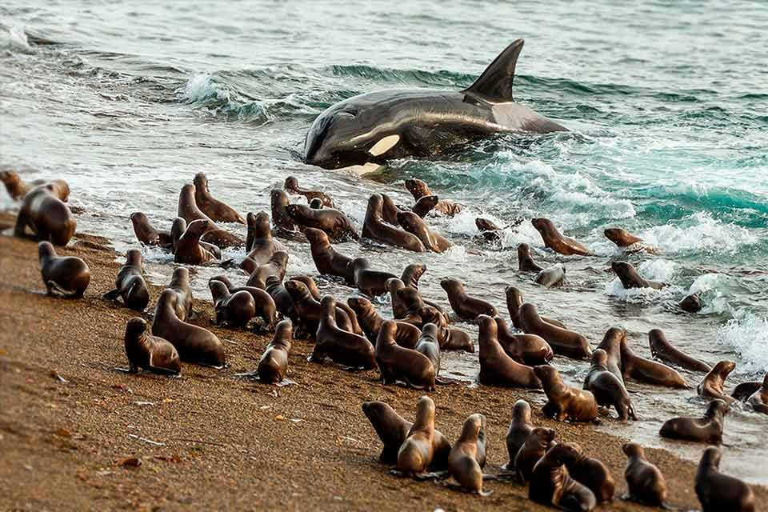
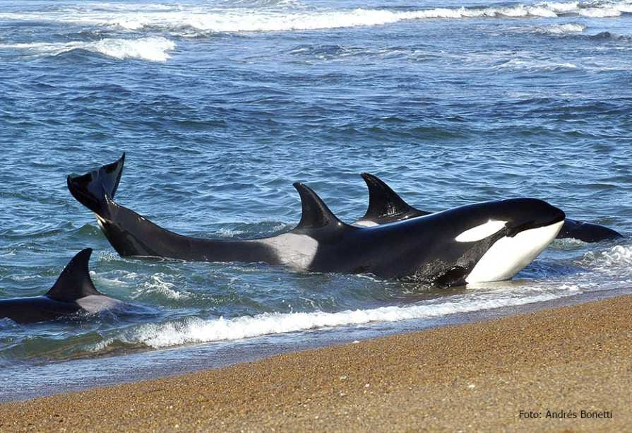
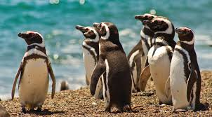

Actividades para tu Cumpleaños en Puerto Madryn
🎉🐳🏖️
¡Aventuras Inolvidables! 🚀✨
¡Bienvenido a Puerto Madryn, el paraíso patagónico perfecto para celebrar tu cumpleaños y nuestro primer aniversario!
- 🐋 Avistamiento de ballenas francas australes (de junio a diciembre)
- 🏖️ Visita a las playas de arena dorada: El Doradillo y Paraná
- 🐧 Excursión a la colonia de pingüinos de Punta Tombo
- 🦭 Exploración de la Península Valdés, Patrimonio de la Humanidad
- 🍽️ Degustación de la deliciosa gastronomía local: mariscos y cordero patagónico



Prepárate para una experiencia inolvidable rodeado de naturaleza y vida marina única en el mundo.
Volver al Menú Principal